Buildings 168
Sort
 Tokyo Metropolitan Government Building1991 · Tokyo
Tokyo Metropolitan Government Building1991 · Tokyo Umeda Sky Building1993 · Osaka
Umeda Sky Building1993 · Osaka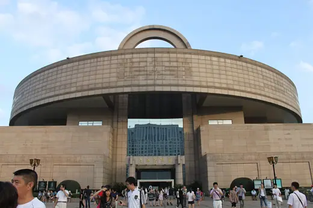
Shanghai Museum1996 · Shanghai AT&T Building (550 Madison Avenue)1984 · New York
AT&T Building (550 Madison Avenue)1984 · New York Neue Staatsgalerie1984 · Stuttgart
Neue Staatsgalerie1984 · Stuttgart Antigone2000 · Montpellier
Antigone2000 · Montpellier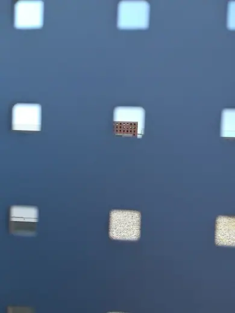
San Cataldo Cemetery1978 · Modena Great Mosque of Rome1995 · Rome
Great Mosque of Rome1995 · Rome Cymbalista Synagogue1998 · Tel Aviv
Cymbalista Synagogue1998 · Tel Aviv SIS Building1994 · London
SIS Building1994 · London Yokohama Museum of Art1989 · Yokohama
Yokohama Museum of Art1989 · Yokohama Wiesner Building (MIT Media Lab)1985 · Cambridge
Wiesner Building (MIT Media Lab)1985 · Cambridge Lipstick Building1986 · New York City
Lipstick Building1986 · New York City Walden 71975 · Sant Just Desvern
Walden 71975 · Sant Just Desvern Bonnefanten Museum1995 · Maastricht
Bonnefanten Museum1995 · Maastricht Recoleta Cultural Center1980 · Buenos Aires
Recoleta Cultural Center1980 · Buenos Aires La Muralla Roja1973 · Calp
La Muralla Roja1973 · Calp The Lowry2000 · Salford
The Lowry2000 · Salford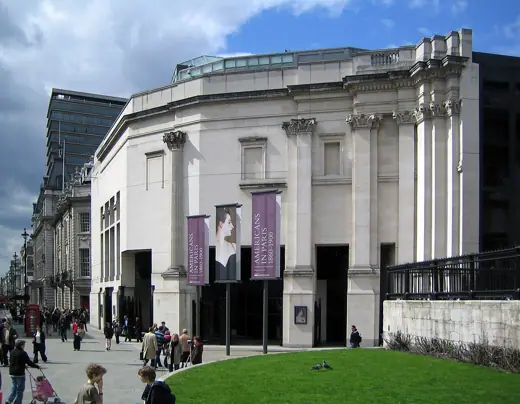
Sainsbury Wing, National Gallery1991 · London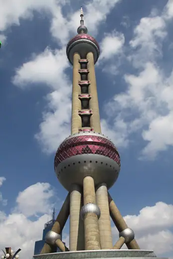
Oriental Pearl Tower1994 · Shanghai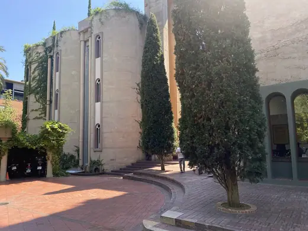
La Fábrica1975 · Sant Just Desvern Okanoyama Museum of Art1984 · Nishiwaki
Okanoyama Museum of Art1984 · Nishiwaki Gate of Europe1996 · Madrid
Gate of Europe1996 · Madrid Tokyo Metropolitan Theatre1990 · Tokyo
Tokyo Metropolitan Theatre1990 · Tokyo Casals Hall (Ochanomizu Square)1987 · Tokyo
Casals Hall (Ochanomizu Square)1987 · Tokyo Taipei 1012004 · Taipei
Taipei 1012004 · Taipei Petronas Towers1998 · Kuala Lumpur
Petronas Towers1998 · Kuala Lumpur Cube Houses1984 · Rotterdam
Cube Houses1984 · Rotterdam Messeturm1991 · Frankfurt
Messeturm1991 · Frankfurt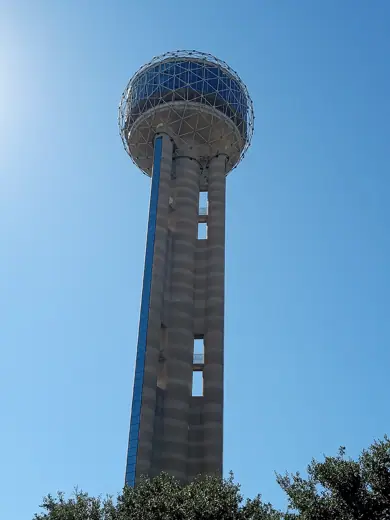
Reunion Tower1978 · Dallas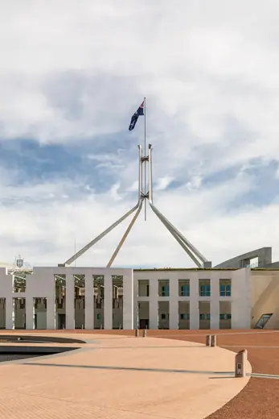
Parliament House1988 · Canberra MART Rovereto2002 · Rovereto
MART Rovereto2002 · Rovereto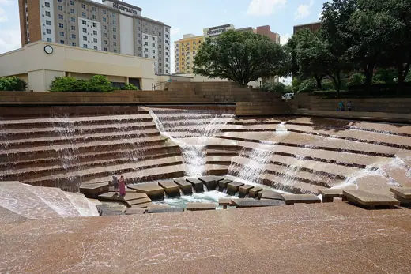
Fort Worth Water Gardens1974 · Fort Worth Évry Cathedral1995 · Évry
Évry Cathedral1995 · Évry Lilla Bommen1989 · Gothenburg
Lilla Bommen1989 · Gothenburg Jin Mao Tower1999 · Shanghai
Jin Mao Tower1999 · Shanghai Vanna Venturi House1964 · Philadelphia
Vanna Venturi House1964 · Philadelphia Portland Building1982 · Portland
Portland Building1982 · Portland Haas House1990 · Vienna
Haas House1990 · Vienna PPG Place1984 · Pittsburgh
PPG Place1984 · Pittsburgh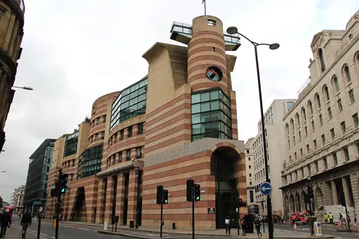
No 1 Poultry1997 · London Spiral1985 · Tokyo
Spiral1985 · Tokyo Museum of Contemporary Art, Los Angeles1986 · Los Angeles
Museum of Contemporary Art, Los Angeles1986 · Los Angeles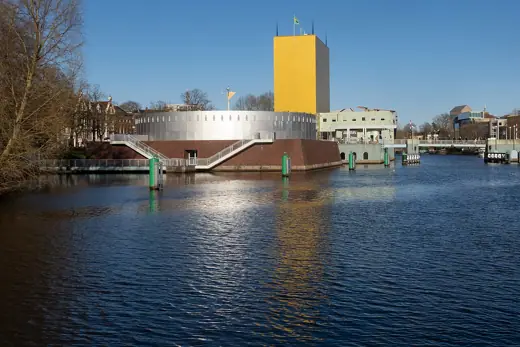
Groninger Museum1994 · Groningen Clore Gallery, Tate Britain1987 · London
Clore Gallery, Tate Britain1987 · London Harold Washington Library Center1991 · Chicago
Harold Washington Library Center1991 · Chicago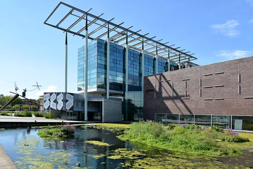
Het Nieuwe Instituut1993 · Rotterdam Tsukuba Center Building1983 · Tsukuba
Tsukuba Center Building1983 · Tsukuba